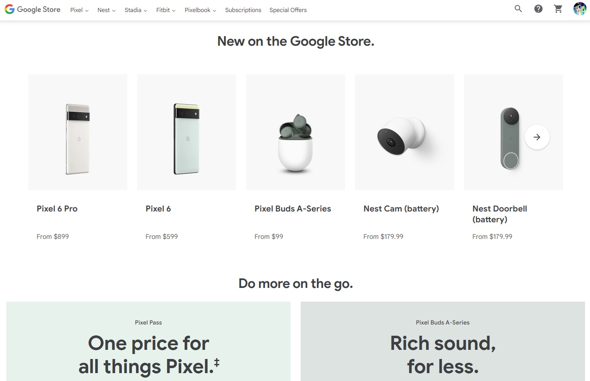
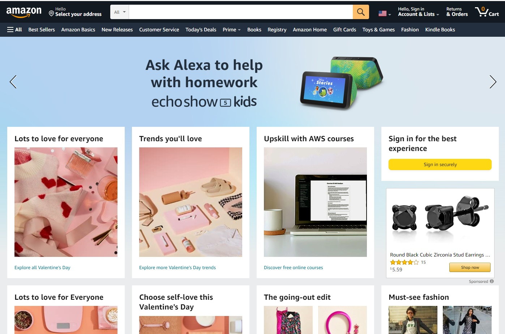
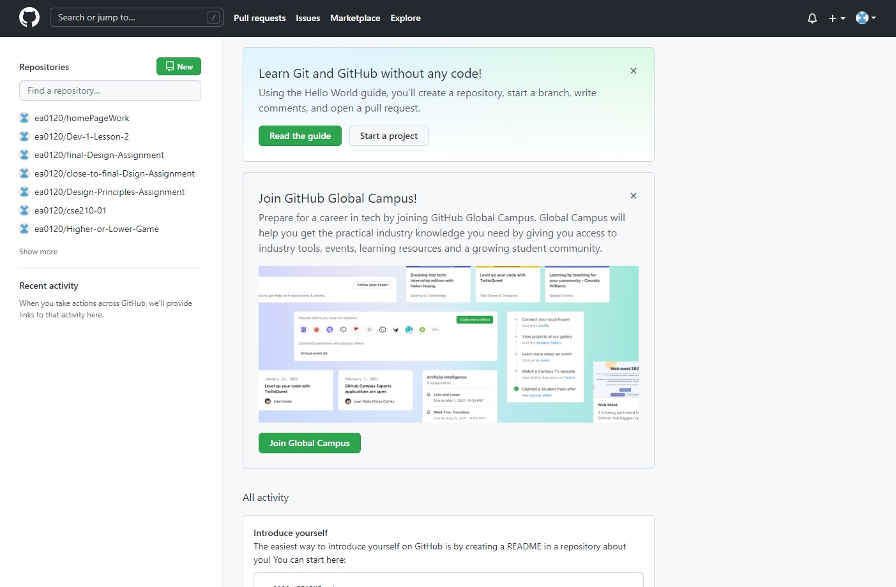

Google Store
Google App Store is an example of Repetition. You can see this inthe why it's formated. Each picture of a phone is exactly the same.
Amazon
Amazon is an example of Contrast. You can see thi sin the many colors onthe sight, plus the changing headline at the top.
GitHub
GitHub is an example of WhiteSpace and Clear Design. You can easily see where the differt links are, where the user manual is, and where the user home can be located.